- Introduction
- Projector Hardware
- Motor Drive
- Main Board
- Projection Screen
- The System in Action
- Conclusions and Future Plans
- Choosing a Camera
Introduction
8mm film in general holds a special place in my heart because it was the first motion capture medium that was available to the ordinary person. You can get an idea of how revolutionary this was when it was introduced in the 60s by the behaviour of the people in front of and behind the camera. Many of the scenes captured on these films (here's my car, here's me waving) wouldn't warrant the few megabytes they would consume on today's memory cards but they were noteworthy then because of the sheer novelty of the medium. The great thing about this is that 40 years later we can look back into time and see fascinating details in mundane scenes; the cars, the clothing and the incredibly dangerous toys we let our kids play with. Add to that the saturated color, scratches, lines, errant hairs and it's easy to see why it's become the metaphor of choice for modern movies that want to wistfully look back into the past. Everything about it has become iconic.My father was very much into photography and 8mm films when we were kids. As well as the usual holiday shots frolicking about on the beach and waving our ice creams around I recall having to stand still while Dad took a frame, then move a bit, another frame and so on. You sent the film in, waited a week or so and then gathered the family around in the dark to watch an awkward 13-year-old travel about the yard without moving his legs. ** image animated gif **
My two brothers and I made our own contributions, culminating in a brief stop-motion-animated tale of an explosion in the street and the valiant efforts of the repair crew, long know as "The Playmobil Movie". It took so long to shoot that you can see the shadows move as the movie plays and my brother grew by about a half inch.
All things must pass, however, and 8mm projectors have gone the way of the dinosaur. Even when they were the T. Rex of the media playback world they were short-tempered, finicky beasts and the viewing session that didn't include burnt fingers, burnt plastic, a blown bulb or damaged film was a rare one. Nowadays you'd pay big bucks for a movie experience like that.
On to the future, then...
Modern 8mm conversion options basically come in two flavors:
1. A high quality conversion service with a dedicated and very expensive machine that performs conversion and color correction. These produce a very nice result but most places charge by the film foot and the cost of doing more than a few films gets prohibitive.
2. The do-it-yourself device that is basically a mirror and a couple of lenses. You put the project in one end and your video camera in the other and literally videotape the film. This is very cheap, in both senses. Your quality is limited by your video camera and the quality of the mirror and lenses. Additionally if you don't match the video camera shutter speed with the projector's frame rate, your video copy will have flicker.
Here then is a system which creates a flicker-free video file with better than HD quality which can be downscaled to HD, DVD, YouTube, whatever you like. I've also described some of the interesting sidetracks I took and how they led to my design decisions. The least developed part of the system is the color processing and cleanup of the video. I'd like to look into that at some point and have some links listed below.
This is a block diagram of the system.

Projector Hardware
The hardware is based around a Bell and Howell 245 PA that I purchased from Ebay. The brand and model don't matter at all since you're only using it for its mechanics, as shown below. The bulb and cooling fan have been removed and the power cord cut. In my case I found the projector lens was unusable since something bad had happened to the lens coatings and the entire lens was fogged (something they're notorious for apparently). Replacements are easily found though. I got mine at xxxxx link xxxxxx.
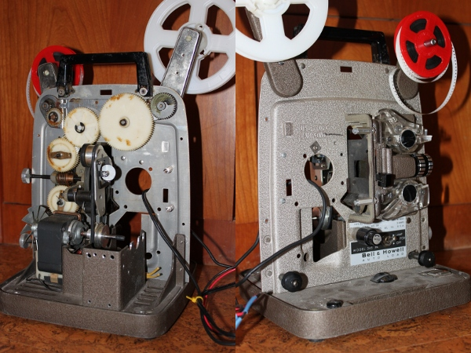
Motor Drive
There are a few options for motor drive.- Pulse Width Modulation (PWM) control of the existing AC motor.
- Installing a DC gearhead motor with a simple relay control to drive the motor shaft.
- A stepper motor plus driver to drive the shaft.
If I was doing this again I'd drive the existing AC motor. It requires the least mechanical intervention. I went with the stepper motor because I didn't know what the motor would be required to do and how fast, and since the microcontroller drives the motor at a low level I could make adjustments via software. Also I knew that I'd be taking it to pieces and reassembling it multiple times as I installed parts of the system, and having non-lethal voltages around seemed like a good idea.
If I was going to go the stepper route again I'd use a less precise motor. I used a 1.8 degree/step motor which is fairly typical but turns out to be way more precise than I needed (about 18 degrees/step would have been fine), and because of that you can't drive it nearly as fast as you could the original AC motor. This means you can't fast forward, rewind or even play at normal speed. It's a minor nuisance for the 25ft 3 minute films, but there are 200ft and 400ft films out there also.
Stepper Motor
| 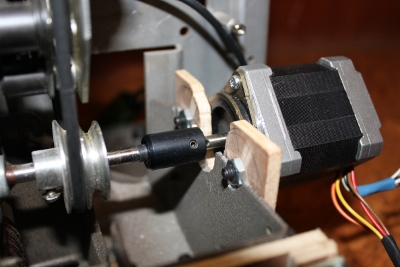 | As you can see though, the
stepper mounting is reasonably straightforward. The two shafts are
slightly different diameters so I got the coupling from an RC hobby
site and drilled out the inside to the sizes I needed. |
Stepper Driver
| The stepper driver is a 5A driver from Robokits.
It's really good value for money, about US$9. It's using TIP 127 and
TIP122 FETs which are hardly the cutting edge but they do a great job
here. If you were running them continuously they'd need active cooling
but for me they're only running for 1 second every 3 and just get a
little warm. The board also has the nice feature of an onboard 5v
regulator so you can feed the rest of your logic from whatever voltage
you picked to drive the motor. I haven't noticed any spiking issues. Here's the stepper driver installed and connected to the motor. The motor is a unipolar (6 wires) but I'm ignoring the center taps and using it in bipolar configuration. The motor only puts out half its rated power in this mode because you're driving two coils in series (with twice the resistance) but in this case it had juice to spare. |
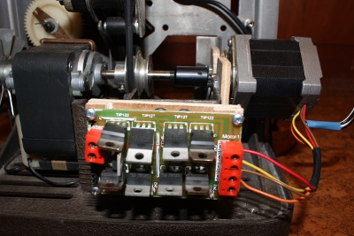 |
Main Board
| 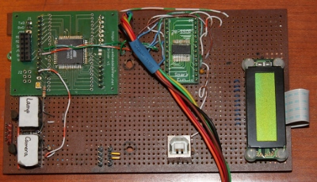 | 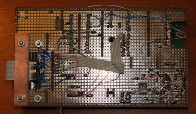 |
The heart of the system is an Atmel AVR ATMega 169 microcontroller. I'm a big fan of the AVR micros; Linux supports a very capable toolchain plus they have an their incredible range of on-chip devices. Also the generous sample-giving-out policy helped a lot when I was broke. I'm into the 169 in particular because I tend to build projects that need a lot of I/O. The Microchip PIC is also a worthy contender and Atmel themselves have come up with more powerful chips but I have a couple of hundred 169s sitting in my basement plus about 160 circuit boards for them, so I guess I'll be sticking with them for a while.
There is no reason that you couldn't replace the main board with a link to the computer's parallel port, aside from not being able to drive the stepper motor as fast. The system has only 1 hardware input, everything else is output. The advantage of this system though is that it presents itself to the PC as a USB serial port and so can be controlled from any terminal communications program or script (as I will show later), plus needs no proprietary connections to the computer. Therefore you can run it on any PC, any OS (I run it via linux).
USB Serial Interface
Also on the main board is an FTDI FT232R USB-to-serial converter chip, which has been a breeze to use. It appears to the host computer as a serial port and has a simple receive/transmit pair for the microcontroller. This makes interfacing to the board platform independent since you can drive it from any terminal communications program.LCD
The LCD (from Electronics Goldmine) on the mainboard is basically unused right now. I did have this idea early on of making the projector standalone with the LCD showing a frame count and a simple keyboard to kick off the conversion process. However since I'm knee deep in PCs most of the time it wouldn't buy me much.Camera Relay
My original idea for the camera trigger was to get a camera that could take photos via commands from its USB port and drive that with gphoto2 on Linux. I had some candidate cameras in my junk drawer for that purpose. The potentially cool thing about was that when the camera's memory card became full the pictures would be downloaded to the computer and the camera could then resume its work. The problem was that cameras that could be remotely controlled AND support file transfer without a power restart and faking the presence or absence of the USB connection was by no means universal and I wanted the option to upgrade cameras with minimal impact. This suggested a simpler "remote switch" that would trigger the camera as if the shutter had been pressed. As it turned out the time between my coming up with this idea and now was about 5 years, and in that time digital cameras changed a lot. I recently purchased my first DSLR (a Canon EOS 500D which I *love*) and it has a simple 3.5mm jack for the remote control switch. A little bit of Googling turned up the wiring diagram for it and so it was simple to have the microcontroller drive the relay closed for 100ms and have the camera take the picture. As for running out of memory that's become much less than of an issue. The camera has a 16GB SD card and even with a 15 megapixel image consuming 5 MB for each frame, that's 5MB x 16 fps x 180 seconds = 14.4 GB. A little close but no biggie, and of course you can stop the system and transfer the image files anytime.Lamp
I replaced the lamp with a 3 Watt white LED from dealextreme.com for all the usual reasons; the original bulb is hot, delicate and expensive. I bought the voltage converter along with it to make interfacing easier. The lamp is turned on by the lamp relay from the main board. The voltage converter has an upper bound of 7.2v and I happened to have a power supply of just that voltage, so the LED got its own power supply. This means that the project actually uses two power supplies but it was a lot easier than coming up with a high current voltage regulator. The LED assembly is soldered to a piece of copper clad board which acts as a heatsink.IR LED and IR Sensor
The IR LED and sensor are mounted on each side of the projector wheel and count off how many times the spokes of the wheel pass between them. This is how I know when to stop and motor with the film frame correctly positioned.| 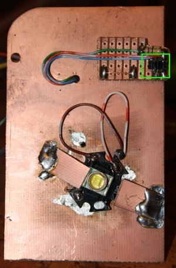 |
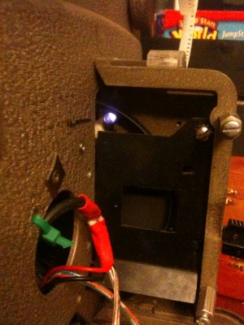 |
| 3Watt LED and IR sensor (green
rectangle) |
IR emitter shining through from
the other side of the wheel |
The Completed Projector
| 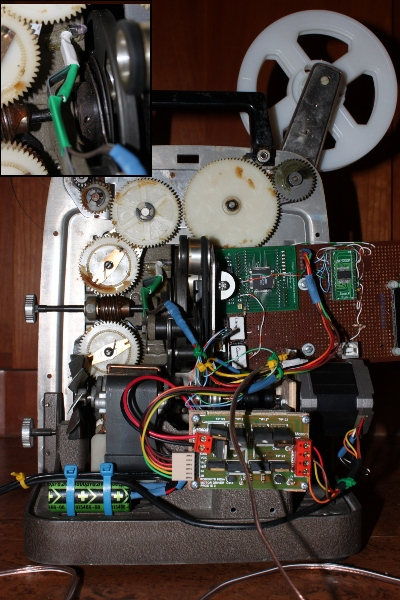 |
Here
is the left side of the unit with the inset photo showing how the IR
LED is mounted. The wire trailing off at the front is the camera remote
control. |
| Here is the other side
showing the LED/IR sensor assembly in place. The green blob is the LED
voltage converter in heatshrink. |
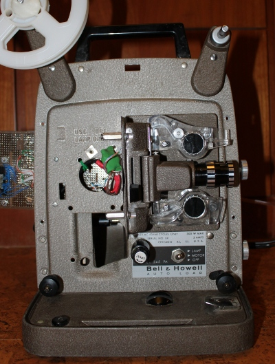 |
| 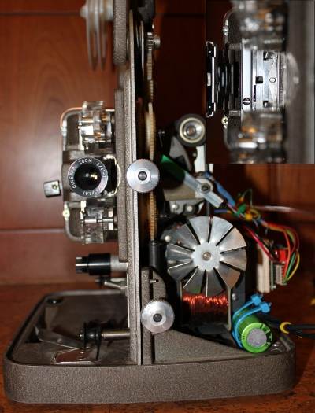 |
Here is the front of the
projector. The inset shows the hole where the light shines through. You
can't tell from this image but I enlarged the hole about 10% so that I
can apply a dark frame to each image in software, which looks much
sharper than relying on the shape of the hole. |
Software
Projector Software
The Atmel microcontroller is programmed in C using avr-gcc on a linux system. The download to the chip is done via avrdude configured to use Lady Ada's USBTinyISP programmer.
The software is really basic. There's a main loop which looks for commands on the serial port and handles the low-level stepper motor signals, plus it controls the lamp and camera relays and monitors the IR sensor.
Main module
Stepper Motor module
Serial communications module
Makefile
PC Software
Sorry, Windows folks, I'm a linux user. However the stuff I'm doing is pretty basic and Windows image manipulation and video authoring is years ahead of linux so I don't imagine there'll be much of a problem..
Build
Projection Screen
Front or Rear Projection?
This actually turned into the most time consuming part of the project. My research for this turned up some pretty interesting stuff. I initially thought front projection would be a good way to go as you could just project onto a piece of paper or a white piece of plastic and take a picture of each frame. One consequence of using a 3 Watt LED as a projection light is that the project cannot throw the image nearly as far as it could with its original bulb. Therefore the camera has to be close to the project to capture the image. When you do that then you have to be aware of what the projection screen is made of. If it's white paper then a high resolution photograph is going to capture the fibers that make up the paper, which is obviously undesirable.The other problem with front projection is that the projector and camera can never be on the same axis which means that the picture has a "keystone" effect where one side of the image is longer than the other. You could adjust the projector, camera and screen to adjust for this but if you get it slightly wrong you don't get a square image, which you wouldn't discover until you examined the pictures.
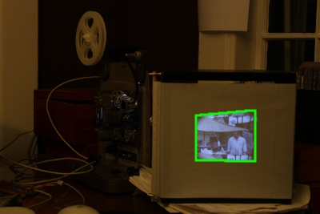
I could have used a similar assembly to the DIY projection systems which reflect off of a mirror at a 45 degree angle to "bend" the image 90 degrees but you'd need a decent front surface mirror, and I want to minimize the number of parts involved if possible.
So then I thought....
Rear Projection
Although getting the axes right in rear projection is easy, you run into a different set of problems in choosing what to project onto. With front projection all you need is a fairly smooth white surface; a decent quality paper sheet or an opaque white shopping bag is fine. With rear projection you have to project through the screen. As I mentioned above the camera has to be fairly close to the projection screen but you don't want to pick up what the screen is made of. I looked into ground, etched and frosted glass. Not only are these are expensive and delicate they still have a structure if you look at them under a magnifying glass.So how do the pros do it? They vibrate the screen. You set the shutter speed of your camera to a reasonable fraction of a second and the projection screen blurs out while the image stays in the same place. Genius.
Building a vibrating system is a bit of an undertaking so I decided to try spinning instead. I buy CDs in bulk packs and the top one is usually just the polycarbonate disk without the dye; it's completely clear. The idea was that I'd glue some translucent plastic sheet (like from a shopping bag) to the disk and spin it while projecting the image on the screen. First up I needed to see how smooth I could get the plastic....
| 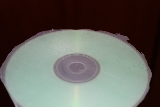 |
Here is the plastic on a regular
CD-R. It's not obvious here but it wasn't that smooth, unfortunately.
The plastic bubbled up a bit. I
was going to refine my process when I decided to shine the image on the
transparent part of the disc next to the hole. Although the image shone
on the plastic sheet quite nicely it also bounced around inside the
polycarbonate disc a few times with the result looking like double
vision. Also
the space available on the CD to project onto was too small for me to
focus on with my camera (no macro lens). So, CDs were out. |
Here's the first cut of a regular projection screen. The criteria for success here is:
- Not so thin that you can see the glow of the LED in the middle of the image
- Not so thick that the image gets muddy
- Doesn't show its "grain", ie what it's made up of
| This is plastic from a heavy
duty shopping bag stretched over a wooden frame (which is a
square shelf-type thing). This is actually working quite nicely. As
you can see it has various creases and lumps but my image only took up
a small part of the screen so I focussed on a good part. I might hit it
with the heat gun to see if that smooths it out, or just stretch it on
four sides instead of just two. I've just come into possession of a broken flat screen television and it has some plastic sheets for diffusing the LCD backlight so I'll give that a try soon. Update: nah; the diffusion sheets come out all sparkly. It turns out that criterion for success item 1 is pretty much impossible; even the professional outfits warn against having the projector in line with the viewer. |
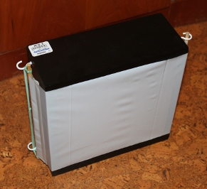 |
| Here's a picture of the
projection without any film. As you can see there is a variation in
brightness and in the middle is the sparkly glow from the LED. I'm
going to use this image as a reference for removing the artifacts from
the film. |
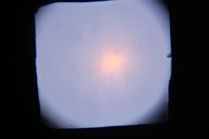 |
| Here is a frame from the film
featuring the sparkly glow. |
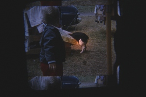 |
| Here is the reference image
inverted. |
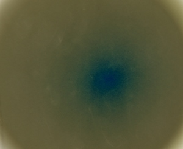 |
| And here is a frame after
having the reference image "added" to it. This was done after playing
around with the Gimp for about 30 minutes. |
Front Projection Again
So, back we go. This time I bought a sheet of (wth is it called) and stuck that on the front of the frame
<picture of that>
The surface is very smooth and once the image is projected on it you cannot see its texture at all.
The projector setup now has the camera almost in line with the projector.
<picture of setup>
The screen is set to half the angle between the projector and camera and of course you still get the keystone effect, but this is easily corrected in software. As you can see the frame not only needs perspective correction but the result needs to be cropped.
Perspective Correction and Cropping in Software
The System in Action
Some Early Results
A film reel came with the projector and I've been using it to develop the system. It's in fairly rough shape so I don't feel too guilty about the creases, breaks and melting. The film is full of scratches and spots so it'll be good test data for when I get into software scratch removal. It's from 1957 and is quite interesting in its own right. Here's a clip. You can see the capture of the preceding and following frames. This is because I enlarged the hole behind the film that the light comes through.Conclusions and Future Plans
Faster image captureProject directly into the lens
super 8 with sound
Choosing a Camera
There's no contest - use a digital SLR. One thing that blew me away when I got my Canon was how much better the pictures were compared to my point-and-shoot. Megapixels is only part of it; the two biggest other factors are:1. The size of the image sensor. Most point and shoot cameras have an image sensor size of around 7mm by 5mm. DSLRs have a sensor of around 25 x 16 mm, about 11 times the area and light collecting ability. Each sensor "pixel" is proportionately larger in the DSLR, which means it collects more light information in proportion to its natural sources of interference (such as electronic noise) and can present a truer representation of the received color.
2. Optics. The lenses in a DSLR are of much higher quality than those of a point-and-shoot, and you pay accordingly.
There's another benefit of DSLR over point-and-shoot in this application; you can power off the camera without affecting the focus and zoom. Point-and-shoot cameras retract the lens on power down and redeploy when the camera is turned on again. You cannot be sure that you set the zoom exactly the same way as you had it before, and in the finished video that will show as a sudden zoom change that is very noticeable. On the DSLR zoom and focus can be set manually and are unaffected by the camera being turned off.
Of course that's easy for me to say; I have a DSLR. If that's beyond your budget then any point-and-shoot will do the job with varying degrees of quality, all of which will beat the store-bought conversion products. You need to be able to digitize a complete film without powering down the camera or running out of storage, plus it needs a remote control.
Art
Links